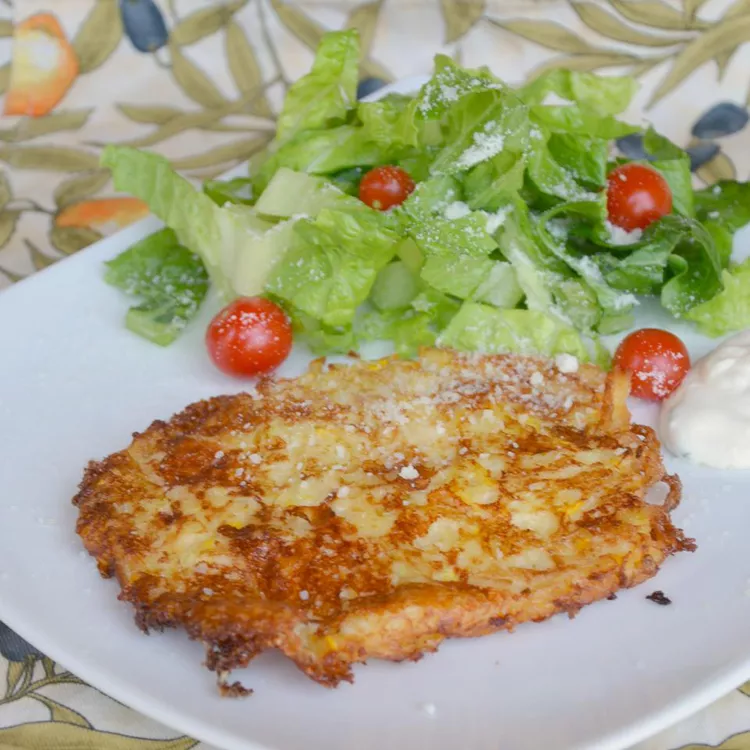

Zucchini Patty Pancakes

Description
This is my mom's recipe which is a favorite of my dad's and is quickly becoming a favorite at my house. The
flavor of onions and zucchini blend nicely together in this recipe that will help use up the bountiful zucchini
from your garden.
Ingredients
- 2 tablespoons olive oil, or as desired
- 2 cups shredded zucchini
- 2 cups finely crushed buttery round crackers (such as Ritz®)
- 1 1/2 cups finely chopped yellow onion
- 3 eggs, beaten
- 1/2 cup shredded sharp cheddar cheese
- salt and ground black pepper to taste
Steps
- Heat oil in a large skillet over medium-high heat.
- Combine zucchini, crackers, onion, eggs, cheddar cheese, salt, and pepper in a bowl using a spoon or your
hands until mixture is evenly combined. Form mixture into small patties.
- Fry patties in the hot oil until lightly browned and heated through, 2 to 3 minutes per side.